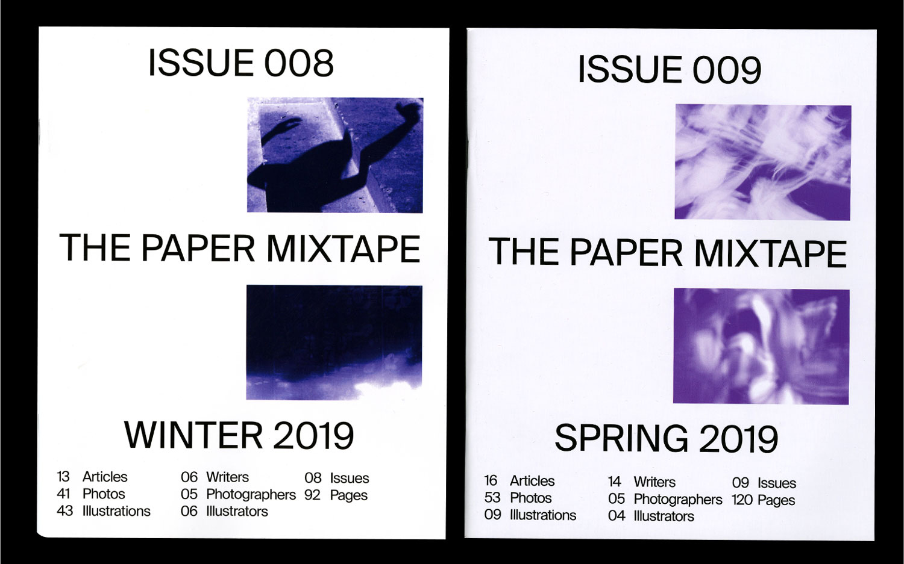
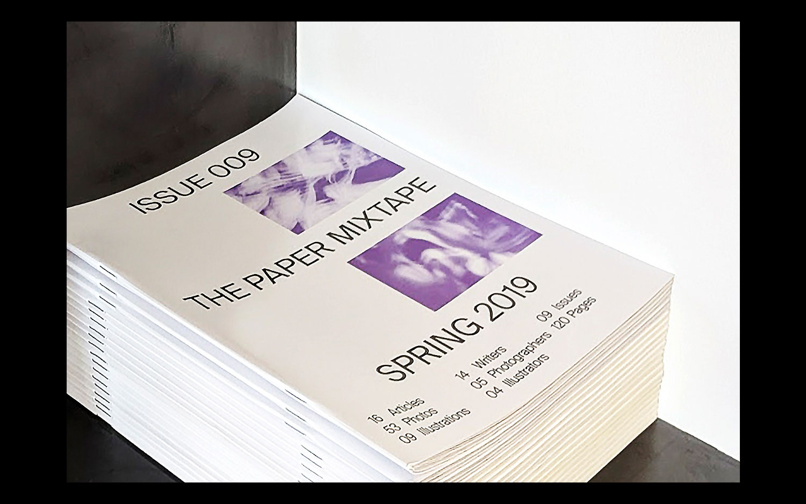
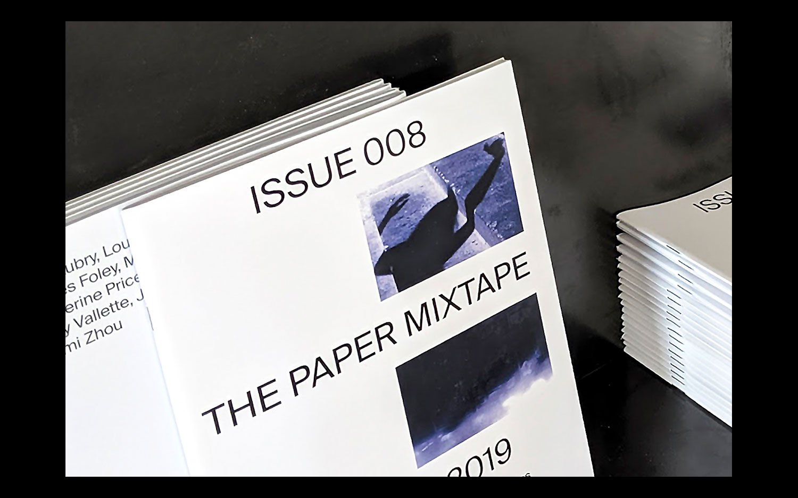
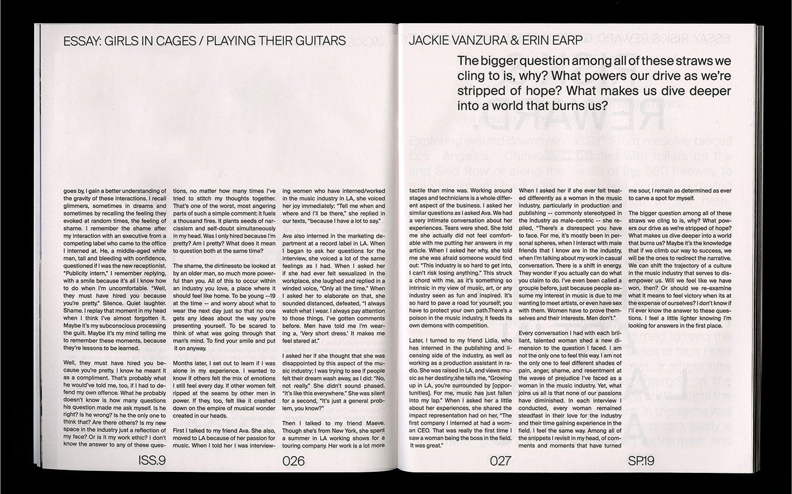

STEFANIE TAM
INFORMATION
05.2019; 500 copies; 8"X10"; 120 pages/96 pages
The Paper Mixtape is an LA based biannual arts & culture publication.
Issues 08 and 09 feature articles from 35 contributors chronicling Los Angeles. Issues 08 & 09: Editor in Chief: Annika Karody; Creative Direction, Publication Design, Web Design: Stefanie Tam.